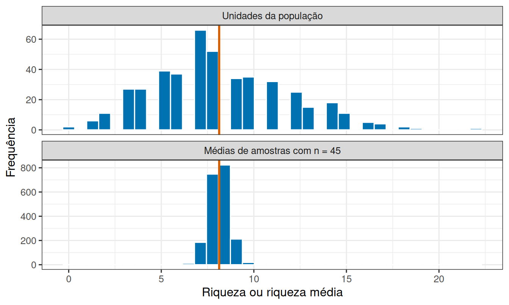
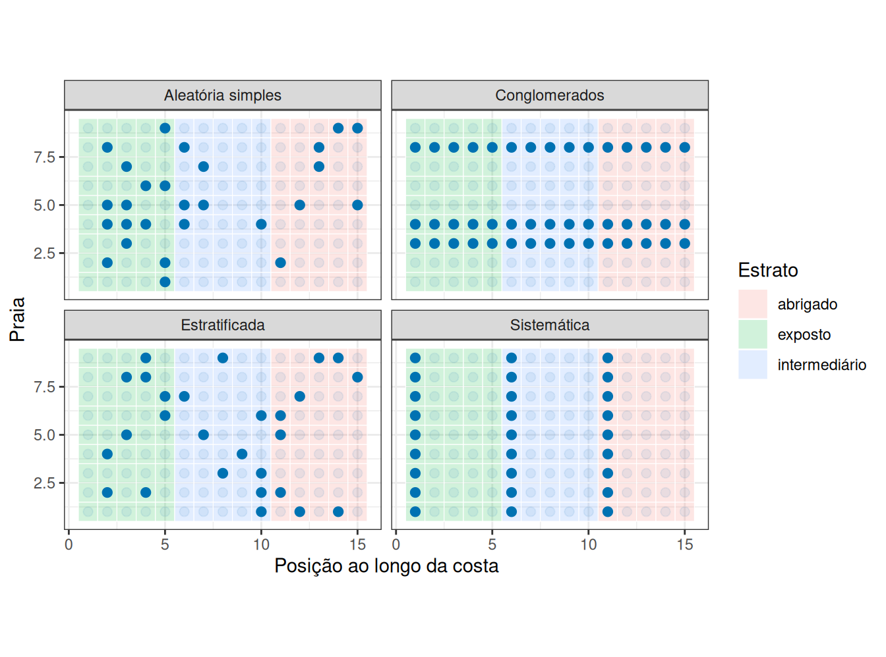
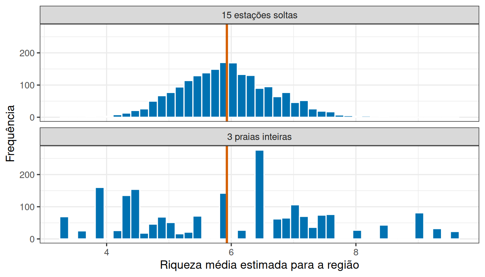
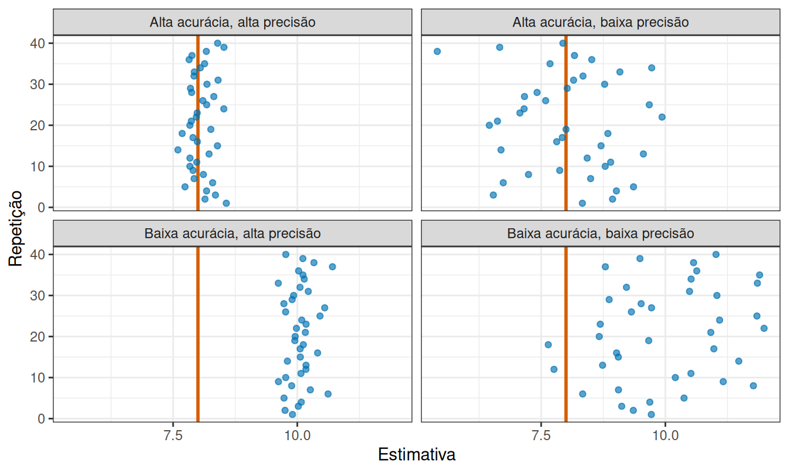

O que 45 estações dizem sobre a região?
Leitura prévia
1 De onde vêm e o que significam os dados
Uma equipe percorre o litoral e registra, em 45 estações distribuídas por nove praias, quantas espécies de invertebrados encontra em cada uma. Ao fim, a planilha tem 45 linhas.
O foco do relatório, no entanto, não é sobre essas 45 estações. O foco é sobre as praias, isto é, quantas espécies uma estação daquele litoral costuma abrigar e se as praias se parecem entre si.
Se é desta forma, podemos nos perguntar o que 45 estações permitem dizer sobre um litoral que tem milhares delas?
1.1 População e amostra
Repare que a população não é definida pelos dados, é definida pela pergunta. Se a pergunta é sobre aquele litoral, a população são todas as estações do litoral. Se é sobre uma praia específica, a população encolhe, e as 5 estações daquela praia passam a ser a amostra.
Definir a população antes de coletar evita a situação mais desconfortável da análise de dados, que é descobrir, no fim, que os dados respondem a uma pergunta diferente da que se queria fazer.
Definida a população, a incerteza passa a ser inevitável. Se todas as estações do litoral fossem idênticas, uma única medida bastaria. Como elas variam, cada amostra produz uma resposta um pouco diferente. Isso não é um defeito do levantamento, é a consequência de medir uma parte para falar do todo.
Ao obter uma amostra, o interesse final não está nela mesma, pois essa será completamente conhecida assim que medida. O interesse está em conhecer as propriedades da população, essa sim nunca conhecida por completo, apenas estimada por meio da amostra. Por isso, uma estimativa sempre vem acompanhada de uma margem de incerteza, que expressa justamente o fato de a população nunca ser observada por inteiro.
1.2 Parâmetros, estimadores e estimativas
Uma característica numérica da população é um parâmetro. A média populacional, por exemplo, é
\[ \mu=\frac{1}{N}\sum_{i=1}^{N}X_i. \]
Como \(\mu\) é desconhecida, calculamos a estatística
\[ \bar{x}=\frac{1}{n}\sum_{i=1}^{n}x_i. \]
A regra que transforma uma amostra em \(\bar{x}\) é um estimador e o número obtido em uma coleta específica é a estimativa. Um estimador é não enviesado quando, ao repetir a amostragem muitas vezes, suas estimativas ficam centradas ao redor do parâmetro.
A mesma distinção vale para a variabilidade. Para uma população finita com valores \(X_1,\ldots,X_N\), a variância populacional é
\[ \sigma^2=\frac{1}{N}\sum_{i=1}^{N}(X_i-\mu)^2. \]
Na amostra, usamos
\[ s^2=\frac{1}{n-1}\sum_{i=1}^{n}(x_i-\bar{x})^2. \]
O divisor \(n-1\) faz com que \(s^2\) seja não enviesado para \(\sigma^2\) sob amostragem aleatória simples. A versão com divisor \(n\) tende a subestimar a variabilidade populacional, porque a própria amostra foi usada para localizar o centro.
Vale insistir na diferença entre três conjuntos de valores que costumam ser confundidos. A distribuição populacional descreve os valores de todas as unidades da população. A distribuição da amostra descreve apenas os valores que entraram em uma coleta, e muda quando o sorteio muda. A distribuição amostral, por sua vez, não descreve unidades, descreve os resultados de uma estatística, como \(\bar{x}\), quando o desenho de coleta é repetido muitas vezes. A primeira fala das unidades populacionais, a segunda das unidades observadas e a terceira do desempenho de um procedimento.
É essa terceira distribuição que permite avaliar um estimador, porque ela mostra onde as estimativas se concentram e o quanto se espalham. A Figura 1 simula uma região com 450 estações e põe lado a lado a distribuição populacional, no painel de cima, e a distribuição amostral da média para amostras de 45 unidades, no painel de baixo.
A média populacional desta simulação é 8,13 espécies. A amostra de 45 estações que sorteamos produziu a estimativa 8,33, próxima mas não idêntica. O histograma estreito das médias não afirma que as estações se tornaram homogêneas. Ele mostra que uma média de 45 unidades é bem mais estável que uma unidade isolada, com desvio-padrão de 0,53 espécies entre as repetições. É essa nuvem de estimativas que permite dizer se o estimador está centrado no parâmetro e quão preciso é o procedimento.
2 Quatro maneiras de construir uma amostra probabilística
Saber o que é um bom estimador não diz ainda como escolher as unidades. Em todos os desenhos a seguir a seleção envolve sorteio, e é o sorteio que sustenta a inferência. O que muda é a estrutura imposta a ele.
Na amostragem aleatória simples, todas as unidades têm a mesma chance de seleção e cada unidade é sorteada com a mesma probabilidade. É o desenho mais simples de justificar.
Na amostragem sistemática, sorteamos um ponto inicial e seguimos um intervalo regular, como visitar uma estação a cada 500 m. Ela distribui bem o esforço, desde que a periodicidade do ambiente não coincida com o intervalo escolhido.
Na amostragem estratificada, dividimos a população em estratos conhecidos, como setores expostos e abrigados, e sorteamos aleatoriamente unidades dentro de cada um. Isso garante representação e pode aumentar a precisão quando unidades do mesmo estrato se parecem. Para estimar toda a região, as médias dos estratos devem ser ponderadas por seus tamanhos, ou o tamanho amostral em cada estrato deve ser proporcional ao seu tamanho.
Na amostragem por conglomerados, sorteamos grupos naturais, como praias, escolhemos alguns e medimos várias unidades dentro deles. Ela reduz custos, mas unidades do mesmo conglomerado tendem a trazer informação repetida, e adiante veremos quanto isso custa em precisão.
O sorteio propriamente dito é uma operação curta:
Ver um sorteio simples em R
cadastro_estacoes <- tibble(
estacao = 1:45,
setor = rep(c("exposto", "intermediário", "abrigado"), each = 15)
)
cadastro_estacoes |>
slice_sample(n = 15, replace = FALSE)# A tibble: 15 × 2
estacao setor
<int> <chr>
1 25 intermediário
2 31 abrigado
3 10 exposto
4 5 exposto
5 41 abrigado
6 12 exposto
7 23 intermediário
8 8 exposto
9 15 exposto
10 36 abrigado
11 32 abrigado
12 26 intermediário
13 34 abrigado
14 7 exposto
15 6 exposto O argumento replace = FALSE representa amostragem sem reposição, em que uma estação sorteada não pode ser novamente selecionada. Com reposição, a unidade volta ao conjunto e pode ser selecionada mais de uma vez. A amostragem com reposição simplifica modelos probabilísticos, mas a amostragem sem reposição descreve melhor muitos levantamentos de campo. Quando \(n\) é uma fração pequena de \(N\), a diferença entre os dois esquemas é pequena, mas quando a fração é grande, amostrar sem reposição reduz a incerteza.
2.1 O algoritmo revela o desenho amostral
Na amostragem sistemática, se \(N=45\) e queremos \(n=9\), o intervalo é \(k=N/n=5\). Sorteamos um início entre 1 e 5 e selecionamos início, início + 5, início + 10, e assim por diante. O sorteio do início é indispensável, pois começar sempre na primeira estação pode favorecer uma posição recorrente.
Na estratificação proporcional, o tamanho da amostra em cada estrato acompanha o tamanho do estrato na população. Se o estrato \(h\) possui \(N_h\) das \(N\) unidades totais, sorteamos \(n_h=n\frac{N_h}{N}\) unidades naquele estrato. Assim, um estrato que corresponde a 30% da população contribui com 30% da amostra. A média regional é então a soma ponderada \(\bar{x}_{est}=\sum_h(N_h/N)\bar{x}_h\), em que cada média de estrato entra com o mesmo peso \(N_h/N\) que o estrato tem na população. Também é possível alocar o mesmo número de unidades a estratos de tamanhos diferentes, por exemplo, quando um estrato raro precisa de amostra suficiente para ser estimado com alguma precisão. Nesse caso, entretanto, os estratos deixam de ser igualmente representativos, e a análise precisa reintroduzir os pesos \(N_h/N\) ao calcular a média regional, pois ignorá-los enviesaria a estimativa a favor do estrato sobre-amostrado.
No desenho por conglomerados, o sorteio não recai sobre as unidades individuais, e sim sobre o grupo. Sorteiam-se algumas praias e, dentro de cada uma sorteada, medem-se várias estações. Isso não equivale a uma amostragem aleatória simples de estações, porque medir todas as estações de uma mesma praia não transforma cada uma delas em um sorteio independente de praia, pois todas continuam amarradas ao mesmo sorteio inicial, o da praia.
Os quatro desenhos produzem padrões espaciais visivelmente distintos, como mostra a Figura 2.

3 Sortear estações soltas ou praias inteiras?
Os quatro desenhos custam quantias diferentes e produzem estimativas de qualidade diferente. Vale medir essa diferença em um caso concreto, comparando o desenho aleatório simples com o desenho por conglomerados.
Suponha que o orçamento permita visitar 15 estações. Podemos sortear 15 estações soltas por toda a região, ou sortear 3 praias inteiras e medir as 5 estações de cada uma. Nos dois casos são 15 estações e o mesmo esforço de medição, mas a segunda opção é bem mais barata, envolvendo menos deslocamento e menos dias de viagem.
A Figura 3 repete as duas estratégias duas mil vezes em uma região onde as praias diferem bastante entre si. Como o código descreve a comparação inteira, ele fica disponível para leitura.
Ver a simulação das duas estratégias
praias <- tibble(
praia = 1:9,
media_praia = c(11, 10, 4, 3, 6, 3, 4, 4, 6)
)
regiao <- praias |>
slice(rep(1:9, each = 5)) |>
mutate(riqueza = pmax(0, rnorm(45, mean = media_praia, sd = 1.5)))
media_regiao <- mean(regiao$riqueza)
estimativas <- bind_rows(
tibble(
estrategia = "15 estações soltas",
media = replicate(2000, mean(sample(regiao$riqueza, size = 15)))
),
tibble(
estrategia = "3 praias inteiras",
media = replicate(2000, {
sorteadas <- sample(1:9, size = 3)
mean(regiao$riqueza[regiao$praia %in% sorteadas])
})
)
) |>
mutate(estrategia = fct_relevel(estrategia, "15 estações soltas"))
ggplot(estimativas, aes(x = media)) +
geom_histogram(bins = 45, fill = "#0072B2", colour = "white") +
geom_vline(xintercept = media_regiao, colour = "#D55E00", linewidth = 1.1) +
facet_wrap(~ estrategia, ncol = 1) +
labs(x = "Riqueza média estimada para a região", y = "Frequência")
As duas estratégias acertam em média, porque os dois histogramas estão centrados no valor real. O que muda é a dispersão em torno dele. Nesta simulação, as estimativas por estações soltas variaram com desvio-padrão de 0,74 espécies, e as por praias inteiras, de 1,58.
Vale notar o que a simulação não mostra. O desenho por conglomerados perde precisão, mas continua centrado no valor certo, porque as praias entraram por sorteio. Um desenho que escolhesse as praias por conveniência erraria de outra maneira, e é essa segunda maneira que examinamos agora.
4 Precisão e viés são falhas diferentes
A escolha entre estações soltas e praias inteiras afeta a precisão, e a precisão melhora ao coletar mais unidades. Existe, entretanto, um problema diferente, que não é resolvido ao se coletar mais amostras. Se a equipe visitar apenas as praias de acesso fácil, ou apenas as que já sabe serem interessantes, a amostra deixa de representar a região, e as estimativas passam a errar sistematicamente para o mesmo lado.
O sorteio é o que protege contra a segunda falha. Ele não garante uma boa amostra em cada levantamento específico, mas garante que nenhuma característica da região seja sistematicamente favorecida ou excluída.
As duas falhas recebem nomes próprios. Precisão descreve o espalhamento das estimativas repetidas, enquanto acurácia descreve a proximidade entre elas e o parâmetro. Uma estimativa pode ser muito precisa e pouco acurada quando o desenho repete de modo consistente uma seleção enviesada, e as quatro combinações possíveis aparecem na Figura 4.

O painel inferior esquerdo da Figura 4 é o mais perigoso na prática, pois possui estimativas muito concentradas, e concentradas no lugar errado. Como a média populacional é desconhecida, nenhuma medida interna aos dados evidencia essa situação, porque a amostra é coerente consigo mesma. Só o conhecimento do desenho de coleta revelaria o problema.
4.1 Erro amostral e erro não amostral
Convém separar as duas origens do erro. O erro amostral é a diferença que surge porque observamos uma amostra, e não a população inteira. Ele varia de sorteio para sorteio e diminui à medida que \(n\) cresce. O erro não amostral inclui unidades não localizadas, protocolo desigual e erro de medição. Ele pode produzir viés e não desaparece quando \(n\) cresce.
Formalmente, o erro de uma estimativa é \(e=\hat\theta-\theta\), em que \(\hat\theta\) é a estimativa e \(\theta\) o parâmetro. O viés é \(E(\hat\theta)-\theta\), isto é, a média dos erros em muitas repetições do desenho, e a precisão pode ser expressa pela variância de \(\hat\theta\). O erro quadrático médio reúne as duas fontes em um único número:
\[ EQM(\hat\theta)=\operatorname{Var}(\hat\theta)+\operatorname{Viés}(\hat\theta)^2. \]
A equação torna explícito por que as duas falhas não são intercambiáveis. Aumentar \(n\) reduz o primeiro termo e deixa o segundo intacto. Um desenho que reduza o viés à custa de alguma precisão pode, portanto, diminuir o erro total.
A pergunta do início tem, então, uma resposta condicional. As 45 estações dizem muito sobre a região se tiverem sido sorteadas segundo um desenho amostral que a represente, como os discutidos anteriormente. Por outro lado, dizem pouco, por mais numerosas que sejam, se a seleção tiver seguido regras enviesadas. É o desenho amostral que define sobre qual população a inferência é defensável, e nenhuma fórmula aplicada depois amplia esse alcance.